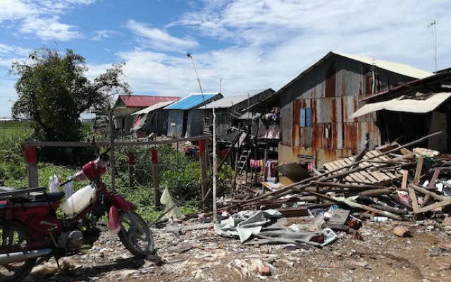

社会的インパクト投資ってそもそも何なの？
ネクストシフトファンドってどんな仕組みなんだろう？ そんな当ファンドに関する素朴なギモンについてお答えしていきます。
-
基礎知識 そもそもネクストシフトファンドとは？
-
基礎知識 社会的インパクト投資ってなに？
基礎知識 社会的インパクト投資ってなに？
社会的インパクト投資とは、「社会的目標の達成と同時に経済的リターンを生み出すことを投資家が意図し、またその両方の成果を評価する投資」 を指します。
一般の証券投資は、リスク、リターンともに経済的側面のみが考えられています。
しかし、社会的インパクト投資は 、2008年の金融危機や2013年G8などを契機として、より良い社会を実現するための投資のあり方として新たに提唱された手法であり、経済的側面のみならず、社会的側面からリスクとリターンを考慮した投資判断が行われます。日本財団によると、2020年までに全世界で100兆円の規模になると試算されており、現在は日系企業、団体をはじめ、多くの企業や団体が社会的インパクト投資を実施しています。
経済的なリスクとリターン及び社会的なリスクとリターンの両方を実現する投資が社会的インパクト投資であり、その投資家を「インパクト投資家」と呼びます。
-
基礎知識 ネクストシフトファンドの仕組みは？
-
基礎知識 融資先のマイクロファイナンス機関ってなに？
-
基礎知識 なぜマイクロファイナンス機関に融資するの？
基礎知識 なぜマイクロファイナンス機関に融資するの？
マイクロファイナンス機関に融資することで、お金が循環し、投資した人、マイクロファイナンス機関、融資を受けた人、皆にメリットをもたらします。
経済的自立を支援するマイクロファイナンス機関にも課題があります。現地のマイクロファイナンス機関は資金調達に苦労している側面もあります。
そこでネクストシフトファンドでは、日本にいらっしゃる方々に投資をしていただくことで、この課題を解決する仕組みを作っています。
マイクロファイナンス機関に融資することで、ネクストシフトファンドを通してお金が循環し、投資した人、マイクロファイナンス機関、融資を受けた人、皆にメリットをもたらし、社会問題解決への貢献と、投資家様への経済的リターンを実現できると考えております。
-
リスクについて 事業者リスクについて教えて
リスクについて 事業者リスクについて教えて
事業者リスクとして信用リスク（倒産リスク）があります。弊社が倒産するなどの最悪の場合は、投資資金が全く償還されない可能性があります。
弊社はこれを軽減するため、健全な財務内容を保持し、健全な経営を行うことに努めています。
株主として、鳥取銀行、鳥取銀行系の投資ファンド（とっとり地方創生ファンド投資事業有限責任組合）、山陰放送などが出資しており、一定の審査を経て、信頼、信用を得たものと自負しており、またこれらの株主の監視のもとで健全経営を行っております。
さらに、経営陣自らも株式を保有し、企業価値を高めていく所存です。上記の株主に加え、2018年12月に増資を行い、2億7,800万円の資金調達を行いました。現在の資本金は、3億9,870万円（資本準備金を含む）となっています。
-
リスクについて 案件リスクについて教えて
リスクについて 案件リスクについて教えて
案件リスクとして、主に融資先の信用リスク（利払い遅延、貸倒れ、倒産リスクなど）、為替変動リスク、カントリーリスクなどがあります。
- ■為替変動リスク
- 融資先のマイクロファイナンス機関にドル建てで融資することから起こります。現在、為替ヘッジ商品の開発を検討しているところです。
- ■信用リスク （利払い遅延、貸倒れ、倒産リスクなど）
- 返済が遅延する等、対象債権の債務者の信用状況の悪化により、予定された金利の支払がなされず、また、元本の返済がなされない結果、お客様の出資した元本額の欠損その他の損失が発生する場合があります。
- ■カントリーリスク
- 対象債権は途上国・新興国におけるマイクロファイナンス機関に対する融資債権及び預金であり、当該国の社会的・経済的環境、政変、金融規制の急激な変化が、大きなリスク要因となることがあります。その結果、お客様の出資した元本額の欠損その他の損失が発生するおそれがあります。
これらのリスクにより、投資元本に欠損が生じたり、予定の分配金を受け取れないリスク、最悪の場合、投資資金が全く償還されない可能性があります。投資をするにあたり、リスクヘッジとしてはやはりファンドや事業者を分散する分散投資を推奨しております。
- ■信用リスクへの対応
- 融資先マイクロファイナンス機関の信用リスクを軽減するため、まず 現地の金融ライセンスを取得しているマイクロファイナンス機関であることを融資先の条件としており、政府の監督下で情報開示がされているものを融資対象としています。財務面の主な指標として、これまでに貸倒れ実績があるのか、マイクロファイナンス機関が現地の借り手へ融資する際の担保の有無などの点を注視します。
- 業界全体の貸倒れ率は直近5年で平均1％前後となっています。マイクロファイナンス機関への投資は安定した利回り、低い不良債権率が特徴です。弊社の自己資金でジョージアのマイクロファイナンス機関に約1年間、融資を行い、償還の実績があります。
-
ファンドあれこれ どうやって融資先対象国や融資先マイクロファイナンス機関を決めてるの？
ファンドあれこれ どうやって融資先対象国や融資先マイクロファイナンス機関を決めてるの？
海外担当者が必ず現地に赴き、情報収集を行ったうえで対象国を選定し、社内規定の融資審査に則って融資先を厳選しています。
海外担当者※が必ず現地に赴き、融資候補先マイクロファイナンス機関の経営陣、現場チーム、そして借り手（マイクロファイナンス機関が直接融資を行う農家や中小零細企業）に直接ヒアリングを行い、コミュニケーションを図るなど現地の生の情報収集をし対象国を選定しています。また社内規定の融資審査に則って融資先を厳選しています。
財務面の主な指標として、これまでに貸倒れ実績があるのか、マイクロファイナンス機関が現地の借り手（マイクロファイナンス機関が直接融資を行う農家や中小零細企業）へ融資する際の担保の有無などの点を注視します。
※弊社海外担当者は、カンボジアのマイクロファイナンス機関での業務経験があり、カンボジア以外も含めマイクロファイナンス業界に知己が多く、情報ネットワークを築いております。
-
ファンドあれこれ 融資を決めるにあたり特に意識してることはあるの？
-
ファンドあれこれ 融資先の審査/判断はどのような体制で行っているの？
-
ファンドあれこれ 利回りはどうやって決めているの？
-
ファンドあれこれ モニタリングについて教えて
-
ファンドあれこれ モニタリングの結果、万が一不正が見つかった場合はどうするの？
-
ファンドあれこれ 資金回収について教えて
-
ファンドあれこれ 融資で利益相反取引が起こらないように気をつけてることは？
-
融資先あれこれ 融資国のカンボジアについて教えて
融資先あれこれ 融資国のカンボジアについて教えて
社会性があり且つ法整備や不良債権率の低さもあり、マイクロファイナンス投資の投資先として、注目を浴びている国の1つです。
1970年後半のポルポトによる虐殺で「かわいそうなカンボジア」という印象が強いかもしれません。今も街中に地雷が埋まっているとイメージする方も多いかと思います。
しかし、今日では東南アジアの一国として毎年急成長をしている国となりました。首都のプノンペンでは建設ラッシュが続く、活気あふれる都市になっています。郊外ではカンボジア人の中上級層向けの住宅開発が進んでいます。
一方で、首都周辺でも経済成長から取り残された地域があり、格差が深刻な課題でもあります。そのような背景からカンボジアへの投資は、社会性があり且つ法整備や不良債権率の低さもあり、マイクロファイナンス投資の投資先として、注目を浴びている国の1つです。
シンバイオティクス社の2017年のレポートによると、欧米の主要MIVの国別ポートフォリオでは、インドに次いで2番目に投資額の大きい国となっています。また2017年末、同国には合計76のマイクロファイナンス機関があり、うち約10機関は日系資本が入っております。
 -
融資先あれこれ 融資国のジョージアについて教えて
融資先あれこれ 融資国のジョージアについて教えて
1991年にソ連から独立した国で、マイクロファイナンスの需要があり、かつ優れた投資環境を持つ国として非常に魅力的な投資先です。
日本人にとってジョージアは馴染みのない国かもしれませんが、カンボジアと同様に、マイクロファイナンス投資では魅力的な投資先として知られています。シンバイオティクス社（2017）によると、世界の主要マイクロファイナンスファンドの国別投資先では、4位になりました。
日本から約8千キロ西に離れたジョージアは1991年にソ連から独立した国です。力士の栃ノ心の出身国としてご存知の方もいらっしゃるかもしれません。2015年まではグルジアと呼ばれていましたが、英語表記に基づきジョージアに変更されました。
ジョージアはロシア、黒海、トルコなどに囲まれた人口約400万人のキリスト教国家で、首都トビリシや郊外でも教会がよく見られます。産業はワインをはじめとした農業が盛んです。また、世界銀行（2018）によると、銀行口座を持っているのは人口の4割とされ、マイクロファイナンスの需要があり、かつ優れた投資環境を持つ国としてジョージアは非常に魅力的な投資先です。
-
資産管理について 私たちの資産についてはちゃんと管理されてる？
-
運営会社のこと ネクストシフトとは？
運営会社のこと ネクストシフトとは？
ネクストシフトは、社会的インパクト投資を実施し、投融資を通じて日本および世界の社会問題の解決に貢献する、鳥取発のインパクト投資会社です。
ネクストシフトは、投資家の資金を預かり、貧困・環境・地方創生などの社会課題の解決に投資。投資家にも経済的リターンをもたらす社会的インパクト投資を行います。現在の主な事業として以下のような事業を行っております。
- ■小口投資ファンド事業
- 当ファンドである 「ネクストシフトファンド」 の運用。
- ■ベンチャーキャピタル事業
- 介護サービス大手のツクイ・グループと共同で、介護・福祉・医療に特化したベンチャーキャピタルファンド 「ツクイ・ケアテック投資事業有限責任組合」 の設立。
- ■インキュベーションオフィス事業
- 公民連携による起業家育成拠点事業として廃校を利用した 「隼Lab.」 の運営へに参画。

-
運営会社のこと 本社が鳥取にある理由って何？
-
運営会社のこと 本社がある「隼ラボ」ってどんなオフィス？